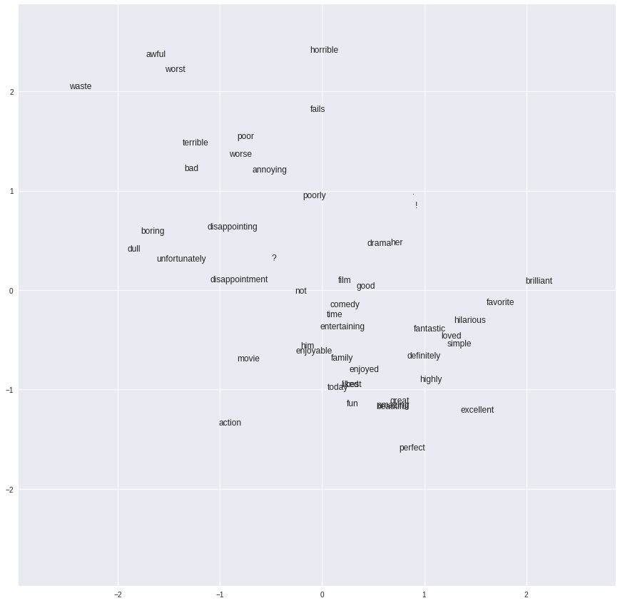
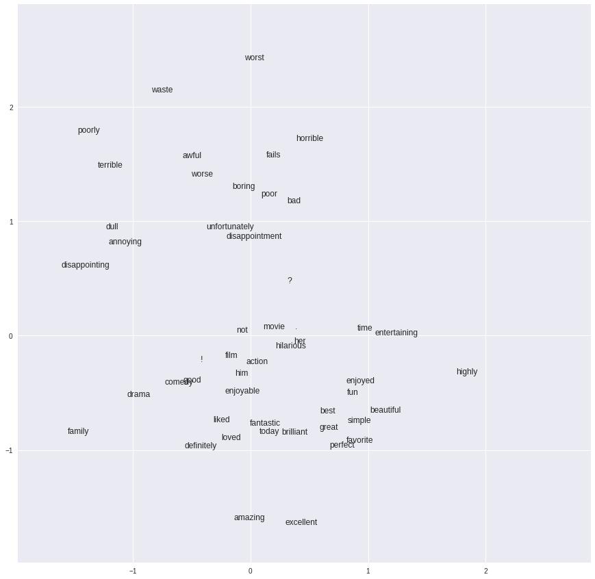

稀疏数据和嵌入简介
- 将影评字符串数据转换为稀疏特征矢量
- 使用稀疏特征矢量实现情感分析线性模型
- 通过将数据投射到二维空间的嵌入来实现情感分析 DNN 模型
- 将嵌入可视化，以便查看模型学到的词语之间的关系
在此练习中，我们将探讨稀疏数据，并使用影评文本数据（来自 ACL 2011 IMDB 数据集）进行嵌入。这些数据已被处理成 tf.Example 格式。
设置
我们导入依赖项并下载训练数据和测试数据。tf.keras 中包含一个文件下载和缓存工具，我们可以用它来检索数据集。
1 | from __future__ import print_function |
Downloading data from https://download.mlcc.google.cn/mledu-datasets/sparse-data-embedding/train.tfrecord
41631744/41625533 [==============================] - 0s 0us/step
Downloading data from https://download.mlcc.google.cn/mledu-datasets/sparse-data-embedding/test.tfrecord
40689664/40688441 [==============================] - 0s 0us/step
构建情感分析模型
我们根据这些数据训练一个情感分析模型，以预测某条评价总体上是好评（标签为 1）还是差评（标签为 0）。
为此，我们会使用词汇表（即我们预计将在数据中看到的每个术语的列表），将字符串值 terms 转换为特征矢量。在本练习中，我们创建了侧重于一组有限术语的小型词汇表。其中的大多数术语明确表示是好评或差评，但有些只是因为有趣而被添加进来。
词汇表中的每个术语都与特征矢量中的一个坐标相对应。为了将样本的字符串值 terms 转换为这种矢量格式，我们按以下方式处理字符串值：如果该术语没有出现在样本字符串中，则坐标值将为 0；如果出现在样本字符串中，则值为 1。未出现在该词汇表中的样本中的术语将被弃用。
注意：我们当然可以使用更大的词汇表，而且有创建此类词汇表的专用工具。此外，我们可以添加少量的 OOV（未收录词汇）分桶，您可以在其中对词汇表中未包含的术语进行哈希处理，而不仅仅是弃用这些术语。我们还可以使用特征哈希法对每个术语进行哈希处理，而不是创建显式词汇表。这在实践中很有效，但却不具备可解读性（这对本练习非常实用）。如需了解处理此类词汇表的工具，请参阅 tf.feature_column 模块。
构建输入管道
首先，我们来配置输入管道，以将数据导入 TensorFlow 模型中。我们可以使用以下函数来解析训练数据和测试数据（格式为 TFRecord），然后返回一个由特征和相应标签组成的字典。
1 | def _parse_function(record): |
为了确认函数是否能正常运行，我们为训练数据构建一个 TFRecordDataset，并使用上述函数将数据映射到特征和标签。
1 | # Create the Dataset object. |
<DatasetV1Adapter shapes: ({terms: (?,)}, (1,)), types: ({terms: tf.string}, tf.float32)>
运行以下单元，以从训练数据集中获取第一个样本。
1 | n = ds.make_one_shot_iterator().get_next() |
({'terms': array([b'but', b'it', b'does', b'have', b'some', b'good', b'action',
b'and', b'a', b'plot', b'that', b'is', b'somewhat', b'interesting',
b'.', b'nevsky', b'acts', b'like', b'a', b'body', b'builder',
b'and', b'he', b'isn', b"'", b't', b'all', b'that', b'attractive',
b',', b'in', b'fact', b',', b'imo', b',', b'he', b'is', b'ugly',
b'.', b'(', b'his', b'acting', b'skills', b'lack', b'everything',
b'!', b')', b'sascha', b'is', b'played', b'very', b'well', b'by',
b'joanna', b'pacula', b',', b'but', b'she', b'needed', b'more',
b'lines', b'than', b'she', b'was', b'given', b',', b'her',
b'character', b'needed', b'to', b'be', b'developed', b'.',
b'there', b'are', b'way', b'too', b'many', b'men', b'in', b'this',
b'story', b',', b'there', b'is', b'zero', b'romance', b',', b'too',
b'much', b'action', b',', b'and', b'way', b'too', b'dumb', b'of',
b'an', b'ending', b'.', b'it', b'is', b'very', b'violent', b'.',
b'i', b'did', b'however', b'love', b'the', b'scenery', b',',
b'this', b'movie', b'takes', b'you', b'all', b'over', b'the',
b'world', b',', b'and', b'that', b'is', b'a', b'bonus', b'.', b'i',
b'also', b'liked', b'how', b'it', b'had', b'some', b'stuff',
b'about', b'the', b'mafia', b'in', b'it', b',', b'not', b'too',
b'much', b'or', b'too', b'little', b',', b'but', b'enough',
b'that', b'it', b'got', b'my', b'attention', b'.', b'the',
b'actors', b'needed', b'to', b'be', b'more', b'handsome', b'.',
b'.', b'.', b'the', b'biggest', b'problem', b'i', b'had', b'was',
b'that', b'nevsky', b'was', b'just', b'too', b'normal', b',',
b'not', b'sexy', b'enough', b'.', b'i', b'think', b'for', b'most',
b'guys', b',', b'sascha', b'will', b'be', b'hot', b'enough', b',',
b'but', b'for', b'us', b'ladies', b'that', b'are', b'fans', b'of',
b'action', b',', b'nevsky', b'just', b'doesn', b"'", b't', b'cut',
b'it', b'.', b'overall', b',', b'this', b'movie', b'was', b'fine',
b',', b'i', b'didn', b"'", b't', b'love', b'it', b'nor', b'did',
b'i', b'hate', b'it', b',', b'just', b'found', b'it', b'to', b'be',
b'another', b'normal', b'action', b'flick', b'.'], dtype=object)},
array([0.], dtype=float32))
现在，我们构建一个正式的输入函数，可以将其传递给 TensorFlow Estimator 对象的 train() 方法。
1 | # Create an input_fn that parses the tf.Examples from the given files, |
使用具有稀疏输入和显式词汇表的线性模型
对于我们的第一个模型，我们将使用 50 个信息性术语来构建 LinearClassifier 模型；始终从简单入手！
以下代码将为我们的术语构建特征列。categorical_column_with_vocabulary_list 函数可使用“字符串-特征矢量”映射来创建特征列。
1 | # 50 informative terms that compose our model vocabulary. |
接下来，我们将构建 LinearClassifier，在训练集中训练该模型，并在评估集中对其进行评估。阅读上述代码后，运行该模型以了解其效果。
1 | my_optimizer = tf.train.AdagradOptimizer(learning_rate=0.1) |
Training set metrics:
accuracy 0.78928
accuracy_baseline 0.5
auc 0.87206453
auc_precision_recall 0.8640158
average_loss 0.45088252
label/mean 0.5
loss 11.272063
precision 0.77057767
prediction/mean 0.4956976
recall 0.82384
global_step 1000
---
Test set metrics:
accuracy 0.78504
accuracy_baseline 0.5
auc 0.86939275
auc_precision_recall 0.8610384
average_loss 0.4532239
label/mean 0.5
loss 11.330598
precision 0.7680963
prediction/mean 0.49426404
recall 0.81664
global_step 1000
---
使用深度神经网络 (DNN) 模型
上述模型是一个线性模型，效果非常好。但是，我们可以使用 DNN 模型实现更好的效果吗？
我们将 LinearClassifier 切换为 DNNClassifier。运行以下单元，看看您的模型效果如何。
1 | ##################### Here's what we changed ################################## |
Training set metrics:
accuracy 0.92
accuracy_baseline 0.68
auc 0.9705881
auc_precision_recall 0.9885154
average_loss 0.33181748
label/mean 0.68
loss 8.295437
precision 1.0
prediction/mean 0.52073544
recall 0.88235295
global_step 1000
---
Test set metrics:
accuracy 0.8
accuracy_baseline 0.56
auc 0.75974023
auc_precision_recall 0.66889143
average_loss 0.7257034
label/mean 0.56
loss 18.142586
precision 0.84615386
prediction/mean 0.4270074
recall 0.78571427
global_step 1000
---
在 DNN 模型中使用嵌入
在此任务中，我们将使用嵌入列来实现 DNN 模型。嵌入列会将稀疏数据作为输入，并返回一个低维度密集矢量作为输出。
注意：从计算方面而言，embedding_column 通常是用于在稀疏数据中训练模型最有效的选项。在此练习末尾的可选部分，我们将更深入地讨论使用 embedding_column 与 indicator_column 之间的实现差异，以及如何在这两者之间做出权衡。
在下面的代码中，执行以下操作：
- 通过将数据投射到二维空间的
embedding_column来为模型定义特征列（如需详细了解embedding_column的函数签名，请参阅相关 TF 文档）。 定义符合以下规范的
DNNClassifier：- 具有两个隐藏层，每个包含 20 个单元
- 采用学习速率为 0.1 的 AdaGrad 优化方法
gradient_clip_norm 值为 5.0
注意：在实践中，我们可能会将数据投射到 2 维以上（比如 50 或 100）的空间中。但就目前而言，2 维是比较容易可视化的维数。
1 | ########################## SOLUTION CODE ######################################## |
Training set metrics:
accuracy 0.78516
accuracy_baseline 0.5
auc 0.8685013
auc_precision_recall 0.8568284
average_loss 0.45557868
label/mean 0.5
loss 11.389467
precision 0.7566789
prediction/mean 0.52443045
recall 0.84064
global_step 1000
---
Test set metrics:
accuracy 0.78168
accuracy_baseline 0.5
auc 0.8668425
auc_precision_recall 0.85428405
average_loss 0.45733798
label/mean 0.5
loss 11.433449
precision 0.7556637
prediction/mean 0.52328736
recall 0.83256
global_step 1000
---
确信模型中确实存在嵌入
上述模型使用了 embedding_column，而且似乎很有效，但这并没有让我们了解到内部发生的情形。我们如何检查该模型确实在内部使用了嵌入？
首先，我们来看看该模型中的张量：
1 | classifier.get_variable_names() |
['dnn/hiddenlayer_0/bias',
'dnn/hiddenlayer_0/bias/t_0/Adagrad',
'dnn/hiddenlayer_0/kernel',
'dnn/hiddenlayer_0/kernel/t_0/Adagrad',
'dnn/hiddenlayer_1/bias',
'dnn/hiddenlayer_1/bias/t_0/Adagrad',
'dnn/hiddenlayer_1/kernel',
'dnn/hiddenlayer_1/kernel/t_0/Adagrad',
'dnn/input_from_feature_columns/input_layer/terms_embedding/embedding_weights',
'dnn/input_from_feature_columns/input_layer/terms_embedding/embedding_weights/t_0/Adagrad',
'dnn/logits/bias',
'dnn/logits/bias/t_0/Adagrad',
'dnn/logits/kernel',
'dnn/logits/kernel/t_0/Adagrad',
'global_step']
好的，我们可以看到这里有一个嵌入层：'dnn/input_from_feature_columns/input_layer/terms_embedding/...'。（顺便说一下，有趣的是，该层可以与模型的其他层一起训练，就像所有隐藏层一样。）
嵌入层的形状是否正确？请运行以下代码来查明。
注意：在我们的示例中，嵌入是一个矩阵，可让我们将一个 50 维矢量投射到 2 维空间。
1 | for neure in classifier.get_variable_names(): |
(20,) : dnn/hiddenlayer_0/bias
(20,) : dnn/hiddenlayer_0/bias/t_0/Adagrad
(2, 20) : dnn/hiddenlayer_0/kernel
(2, 20) : dnn/hiddenlayer_0/kernel/t_0/Adagrad
(20,) : dnn/hiddenlayer_1/bias
(20,) : dnn/hiddenlayer_1/bias/t_0/Adagrad
(20, 20) : dnn/hiddenlayer_1/kernel
(20, 20) : dnn/hiddenlayer_1/kernel/t_0/Adagrad
(50, 2) : dnn/input_from_feature_columns/input_layer/terms_embedding/embedding_weights
(50, 2) : dnn/input_from_feature_columns/input_layer/terms_embedding/embedding_weights/t_0/Adagrad
(1,) : dnn/logits/bias
(1,) : dnn/logits/bias/t_0/Adagrad
(20, 1) : dnn/logits/kernel
(20, 1) : dnn/logits/kernel/t_0/Adagrad
() : global_step
花些时间来手动检查各个层及其形状，以确保一切都按照您预期的方式互相连接。
检查嵌入
现在，我们来看看实际嵌入空间，并了解术语最终所在的位置。请执行以下操作：
运行以下代码来查看我们在训练的嵌入。一切最终是否如您所预期的那样？
重新运行在 DNN 模型中使用嵌 中的代码来重新训练该模型，然后再次运行下面的嵌入可视化。哪些保持不变？哪些发生了变化？
最后，仅使用 10 步来重新训练该模型（这将产生一个糟糕的模型）。再次运行下面的嵌入可视化。您现在看到了什么？为什么？
1 | import numpy as np |

1 | import numpy as np |

任务 6：尝试改进模型的效果
看看您能否优化该模型以改进其效果。您可以尝试以下几种做法：
- 更改超参数或使用其他优化工具，比如 Adam（通过遵循这些策略，您的准确率可能只会提高一两个百分点）。
- 向
informative_terms中添加其他术语。此数据集有一个完整的词汇表文件，其中包含 30716 个术语，您可以在以下位置找到该文件：https://download.mlcc.google.cn/mledu-datasets/sparse-data-embedding/terms.txt 您可以从该词汇表文件中挑选出其他术语，也可以通过categorical_column_with_vocabulary_file特征列使用整个词汇表文件。
1 | # Download the vocabulary file. |
Downloading data from https://download.mlcc.google.cn/mledu-datasets/sparse-data-embedding/terms.txt
253952/253538 [==============================] - 0s 0us/step
1 | # Create a feature column from "terms", using a full vocabulary file. |
Training set metrics:
accuracy 0.82
accuracy_baseline 0.5
auc 0.89789164
auc_precision_recall 0.8937925
average_loss 0.4075714
label/mean 0.5
loss 10.189285
precision 0.83664364
prediction/mean 0.4748372
recall 0.79528
global_step 1000
---
Test set metrics:
accuracy 0.8048
accuracy_baseline 0.5
auc 0.88663244
auc_precision_recall 0.8821298
average_loss 0.42734343
label/mean 0.5
loss 10.683586
precision 0.8235394
prediction/mean 0.47395515
recall 0.77584
global_step 1000
---
总结
我们可能获得了比我们原来的线性模型更好且具有嵌入的 DNN 解决方案，但线性模型也相当不错，而且训练速度快得多。线性模型的训练速度之所以更快，是因为它们没有太多要更新的参数或要反向传播的层。
在有些应用中，线性模型的速度可能非常关键，或者从质量的角度来看，线性模型可能完全够用。在其他领域，DNN 提供的额外模型复杂性和能力可能更重要。在定义模型架构时，请记得要充分探讨您的问题，以便知道自己所处的情形。
可选内容：在 embedding_column 与 indicator_column 之间进行权衡
从概念上讲，在训练 LinearClassifier 或 DNNClassifier 时，需要根据实际情况使用稀疏列。TF 提供了两个选项：embedding_column 或 indicator_column。
在训练 LinearClassifier（如使用具有稀疏输入和显式词汇表的线性模型 中所示）时，系统在后台使用了 embedding_column。正如使用深度神经网络 (DNN) 模型 中所示，在训练 DNNClassifier 时，您必须明确选择 embedding_column 或 indicator_column。本部分通过一个简单的示例讨论了这两者之间的区别，以及如何在二者之间进行权衡。
假设我们的稀疏数据包含 "great"、"beautiful" 和 "excellent" 这几个值。由于我们在此处使用的词汇表大小为 $V = 50$，因此第一层中的每个单元（神经元）的权重将为 50。我们用 $s$ 表示稀疏输入中的项数。对于此示例稀疏数据，$s = 3$。对于具有 $V$ 个可能值的输入层，带有 $d$ 个单元的隐藏层需要运行一次“矢量 - 矩阵”乘法运算：$(1 \times V) (V \times d)$。此运算会产生 $O(V d)$ 的计算成本。请注意，此成本与隐藏层中的权重数成正比，而与 $s$ 无关。
如果输入使用 indicator_column 进行了独热编码（长度为 $V$ 的布尔型矢量，存在用 1 表示，其余则为 0），这表示很多零进行了相乘和相加运算。
当我们通过使用大小为 $d$ 的 embedding_column 获得完全相同的结果时，我们将仅查询与示例输入中存在的 3 个特征 "great"、"beautiful" 和 "excellent" 相对应的嵌入并将这三个嵌入相加：$(1 \times d) + (1 \times d) + (1 \times d)$。由于不存在的特征的权重在“矢量-矩阵”乘法中与 0 相乘，因此对结果没有任何影响；而存在的特征的权重在“矢量-矩阵”乘法中与 1 相乘。因此，将通过嵌入查询获得的权重相加会获得与“矢量-矩阵”乘法相同的结果。
当使用嵌入时，计算嵌入查询是一个 $O(s d)$ 计算；从计算方面而言，它比稀疏数据中的 indicator_column 的 $O(V d)$ 更具成本效益，因为 $s$ 远远小于 $V$。（请注意，这些嵌入是临时学习的结果。在任何指定的训练迭代中，都是当前查询的权重。
正如我们在在 DNN 模型中使用嵌入 中看到的，通过在训练 DNNClassifier 过程中使用 embedding_column，我们的模型学习了特征的低维度表示法，其中点积定义了一个针对目标任务的相似性指标。在本例中，影评中使用的相似术语（例如 "great" 和 "excellent"）在嵌入空间中彼此之间距离较近（即具有较大的点积），而相异的术语（例如 "great" 和 "bad"）在嵌入空间中彼此之间距离较远（即具有较小的点积）。